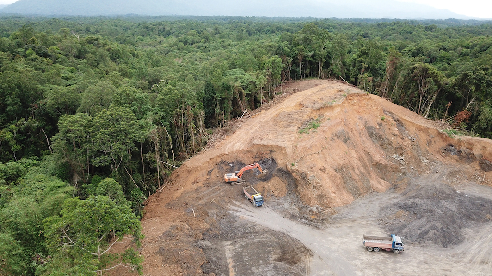
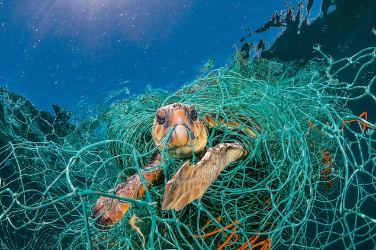

current situation of wildlife
due to vast human development, the environment has become polluted day by day. us humans have damaged our planet on the journey to becoming the top species on it. we have become a threat to every other species who live on this planet. human activities have harmed wildlife all around the world bringing many species to the brink of extinction. in the past year we have lost atleast 20 species forever. If we won't prevent this we will lose many more in the future. The main reasons that are currently harming wildlife around the globe are listed down below.
DEFORESTAION

This is the main threat to wildlife around the world as it reduces living space for them. Deforestation is the purposeful clearing of forested land. Throughout history and into modern times, forests have been razed to make space for agriculture and animal grazing, and to obtain wood for fuel, manufacturing, and construction. Deforestation has greatly altered landscapes around the world The loss of trees and other vegetation can cause climate change, desertification, soil erosion, fewer crops, flooding, increased greenhouse gases in the atmosphere, and a host of problems for indigenous fauna and flora. Deforestation affects animals in many ways. It causes habitat destruction, increased risk of predation, reduced food availability, and much more. As a result, some animals lose their homes, others lose food sources and finally, many lose their lives. In fact, deforestation is one of the main causes of extinction.
POACHING
Poaching is the illegal trafficking and killing of wildlife. Sometimes animal or plant parts are sold as trophies or “folk medicines” and sometimes they are sold as pets or houseplants. With more tigers kept captive than living wild, the scope of poaching can not be overstated. Maintaining Earth's biodiversity is critical as we rely on it for ecosystem services, which makes life possible. To have any hope of achieving this, poaching must be stopped. Poaching has devastating consequences for wildlife. In some instances, it's the primary reason why an animal faces a risk of extinction. This is the case with the African elephant, more than 100,000 of which were killed between 2014 and 2017 for ivory. And poached animals can spread disease, such as Ebola and SARS. Poaching is the primary reason some animals are today considered extinct while others categorized as endangered species. ... Tigers are also at the brink of extinction due to illegal poaching. African pangolins are equally now the targets by poachers as the Asian ones become harder to find.
POLLUTION

Plastics pollution has a direct and deadly effect on wildlife. Thousands of seabirds and sea turtles, seals and other marine mammals are killed each year after ingesting plastic or getting entangled in it. Endangered wildlife like Hawaiian monk seals and Pacific loggerhead sea turtles are among nearly 700 species that eat and get caught in plastic litter. Fish in the North Pacific ingest 12,000 to 24,000 tons of plastic each year, which can cause intestinal injury and death and transfers plastic up the food chain to bigger fish, marine mammals and human seafood eaters. A recent study found that a quarter of fish at markets in California contained plastic in their guts, mostly in the form of plastic microfibers. Sea turtles can mistake floating plastic garbage for food. They can choke, sustain internal injury and die — or starve by thinking they’re full from eating plastic. Tragically, research indicates that half of sea turtles worldwide have ingested plastic. New studies find plastic pollution is so pervasive on many beaches that its affecting their reproduction. Hundreds of thousands of seabirds ingest plastic every year. Plastic ingestion reduces the storage volume of the stomach, causing starvation. It’s estimated that 60 percent of all seabird species have eaten pieces of plastic, with that number predicted to increase to 99 percent by 2050. Dead seabirds are often found with stomachs full of plastic, reflecting how the amount of garbage in our oceans has rapidly increased in the past 40 years. Plastics take hundreds, perhaps even thousands, of years to break down in most environments, such that it is not a stretch to imagine a single bag killing more than one animal over a very long lifetime on land and sea. And while the statistics are incomplete, some conservationists estimate that at least 100,000 mammals and birds die from them each year, felled by the estimated 500 billion and more plastic bags that are produced and consumed around the world; the numbers of fish killed by them are unknown, but they are sure to number in the millions.
CLIMATE CHANGE


Sea levels are rising and oceans are becoming warmer. Longer, more intense droughts threaten crops, wildlife and freshwater supplies. From polar bears in the Arctic to marine turtles off the coast of Africa, our planet's diversity of life is at risk from the changing climate. Climate change poses a fundamental threat to the places, species and people's livelihoods WWF works to protect. To adequately address this crisis we must urgently reduce carbon pollution and prepare for the consequences of global warming Climate variability and change affects birdlife and animals in a number of ways; birds lay eggs earlier in the year than usual, plants bloom earlier and mammals are come out of hibernation sooner. Distribution of animals is also affected; with many species moving closer to the poles as a response to the rise in global temperatures. Birds are migrating and arriving at their nesting grounds earlier, and the nesting grounds that they are moving to are not as far away as they used to be and in some countries the birds don’t even leave anymore, as the climate is suitable all year round. A sea level rise of only 50cm could cause sea turtles to lose their nesting beaches - over 30% of Caribbean beaches are used by turtles during the nesting season and would be affected. The already endangered Mediterranean Monk Seals need beaches upon which to raise their pups and a rise in sea level could there could damage shallow coastal areas used annually by whales and dolphins which need shallow, gentle waters in order to rear there small calves.